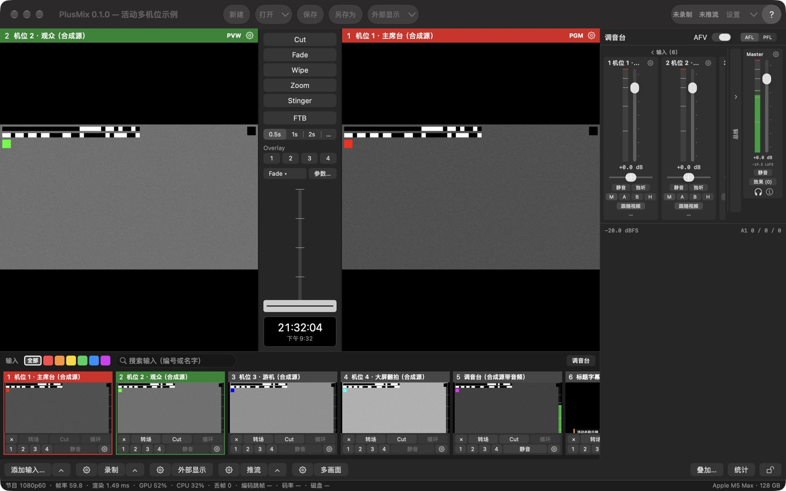

概念
导播台的用词只有一套（设计方案 §1.1（仓库：docs/spec/导播台设计方案.md）），界面、节目文件、API、本手册都用它。
| 词 | 意思 |
|---|---|
| Input（输入） | 编号的信号源：摄像头 / 采集卡、DeckLink、屏幕、视频文件、图片、NDI®、纯音频设备、合成测试源。编号从 1 起，0 保留给"黑场" |
| Program / PGM | 观众看到的画面（右边那个大监视器，红色标题条） |
| Preview / PVW | 下一个要切上去的画面（左边那个大监视器，绿色标题条） |
| Transition（转场） | PVW 变成 PGM 的方式：Cut、Fade、Wipe、Zoom、Stinger。节目里有四个转场槽（转场 1–4），每个槽存一种效果、时长和参数 |
| T-bar | 手动控制转场进度的推杆（横放，左 0 右 1）；推过 97% 松手提交并回弹 |
| FTB | 渐黑（Fade to Black）；开着时 PGM 输出黑场，声音跟着落到静音 |
| Overlay 1–4（叠加通道） | 叠在 PGM 上、可独立开关的四层：下三分之一字幕、画中画、台标 |
| Bus（音频总线） | Master、Bus A、Bus B、耳机（Headphones）四条 |
| Output（输出） | 录制、推流、NDI® 发送、外部显示、虚拟摄像头、多画面 |
| Tally | 每个输入"在 PGM / 在 PVW / 都不在"的状态：格子标题条、多画面边框、Stream Deck 按钮颜色、外部 tally 灯都用它 |
| Show（节目文件） | 一个 JSON 文件（*.switcher.json），保存输入、切换、音频、输出配置和窗口布局 |
| Tick（拍） | 节目时钟的一拍 = 一帧的时间；1080p60 下 30 拍 = 0.5 s |
主窗口

最小窗口 1100×720（含工具条那一行；缩略图选"大"时会再高一点）。各区域：
| 区域 | 做什么 |
|---|---|
| 工具条 | 左："新建 / 打开▾ / 保存 / 另存为"，和"节目"菜单同一套动作（新建、打开同样先问，见节目文件）；"打开▾"= 打开上次退出时的节目 + 最近 10 个 + 清除列表。正中"外部显示▾"：主体 = 全部外部显示开 / 关，▾ = 每块屏送什么（同底栏 ⚙ 外部显示）。右：录制 / 推流状态（只显示，文字和底栏按钮同一份，在录 / 在推时带时长，没开写"未录制 / 未推流"）、"设置▾"（主体 = 打开设置窗、回到上次那一页；▾ = 所有设置页）、"?"（= 帮助菜单） |
| 监视器 | 左 PVW、右 PGM；标题条写编号和名字。标题条右端的齿轮 = 这一路的输入设置（PVW 的齿轮开 PVW 上那一路，PGM 的开 PGM 上那一路；黑场时灰着）。右键监视器 = "输入设置… / 全屏输出到 ▸"：每块屏一项，打勾 = 这块屏正在全屏显示这个监视器的画面，点没勾的 = 这块屏改成显示它，点有勾的 = 关掉这块屏（配置留着）。PGM 标题条上会列出开着的叠加（"通道号 · 输入名"）；FTB 开着时写"PGM · FTB"并慢闪。单击、双击监视器不做任何事 |
| 转场列 | 见下面的转场 |
| 调音台 | 右侧，见音频；窗口 › 调音台，或输入条右端的"调音台"开关收起 / 拉出 |
| 输入条 | 每路输入一个格子：缩略图 + 两行按钮；头一行有分类标签、搜索框；末尾"＋ 添加输入"占位格，可以把视频 / 图片文件拖进来。详见 输入 › 输入条与格子 |
| 底栏 | 两行：上面是按钮，下面是状态行。按钮见下表 |
| 状态行 | 窗口最底一行、全宽。左边每秒刷新：节目格式、帧率、渲染耗时、GPU / CPU、丢帧、编码滞后跳帧、录制码率、推流码率、磁盘剩余（见下）——这些数字和 API、stats.jsonl 里的是同一份（测试标准 §7（仓库：docs/testing/测试标准.md）），不是界面自己另算的。右边平时是本机信息（"Apple M5 Max · 128 GB"），有提示时显示提示（4 s 后消失），有提醒时出现琥珀色的提醒条 |
状态行里和输出有关的三项写成"编码滞后跳帧 n · 录制 x Mb/s · 推流 y Mb/s"：
- 编码滞后跳帧：编码器跟不上、在编码之前跳过的帧（这一路这次开始录 / 推以来累计），取在录 / 在推的路里最多的那一路；录制、推流都没在跑时取 NDI® 发送的。
- 录制 / 推流：分开写码率，几路同时在跑时各写码率最低的那一路（正在退避重连、或起不来的推流码率是 0，就显示 0 b/s）；没在录 / 没在推写"—"。NDI® 发送的原始码率（约 2 Gb/s）不算在里面。
点缩略图 = 选到 PVW；按住 Shift 点 = 直切 PGM。
底栏按钮
大多数按钮分成三段：⚙ 打开这一类的设置，主体直接干活，▴ 弹一个朝上的快捷菜单。没有的段不显示。
| 按钮 | ⚙ | 主体 | ▴ |
|---|---|---|---|
| 添加输入… | — | 添加输入面板，停在上次添加用的类型（⌘I 同一个入口） | 八种类型直达；"最近添加"（最多 5 个）点一下不弹面板、直接再加一路（编号取空号、名字自动取）；= 菜单"输入 › 按类型添加 ▸" |
| 录制 | 菜单：录制设置… / ISO 分路录制… | 都没在录 → 所有参与录制的路同一拍一起开始；有在录的 → 全部停止（先确认）。节目里还没有录制输出 → 先加一路默认的（录到 ~/Movies/PlusMix）再开始 | 每个录制输出一行"名字 · 状态"（✓ = 在录；在录的那一行带时长："名字 · 录制中 · 01:02:05"），点在录的那一行 = 只停这一路（先确认），没开的路灰着（不能中途单独开始）；"全部停止"；末尾"录制状态…"（打开推流 / 录制状态窗的录制页）；= 菜单"输出 › 录制 ▸" |
| 外部显示 | 菜单：每块屏一段单选（PGM / PVW / 多画面 / 输入 n；这块屏已经配过时第一行是"关闭"，关着的那一路标"（已关）"）、删除某一路 / 关闭全部外部显示、外部显示设置… / NDI® 发送设置…；= 菜单"输出 › 外部显示 ▸" | 有开着的 → 全部关；都关着 → 按原来的配置全部开；一路都没配 → 在第一块非主屏上全屏显示 PGM；没有第二块屏 → 弹 ⚙ 那个菜单 | — |
| 推流 | 设置 › 推流页 | 都没开 → 全部开始；有起不来的路 → 只重试那几路（正常的路不停、不问）；都在推 → 全部停止（先确认）。节目里还没有目的地 → 打开推流页，光标放在"添加目的地"的地址框 | 全部开始 / 全部停止；每个目的地一项（"名字 · 状态 · 码率"，点 = 没开的只开它、在推的只停它、起不来的只重试它）；推流设置…（推流页）/ 推流状态…（推流 / 录制状态窗的推流页）；= 菜单"输出 › 推流 ▸" |
| 多画面 | 设置 › 多画面布局页 | 多画面独立窗口开 / 关（开着高亮） | — |
| 叠加…（右组） | — | 打开叠加设置窗，停在上次编辑的那一路（见叠加通道） | — |
| 统计（右组） | — | 统计窗（见下） | — |
| 🔒（最右） | — | 界面锁开 / 关（见下） | — |
录制 / 推流按钮的字反映最差的那一路，在录 / 在推时带时长："● 录制 01:02:05"、几路一起录时"● 录制 00:14:22（3 路）"；"● 推流 00:10:00"（节目里只有一个目的地）、"● 推流 00:10:00（2/3）"（在推的路数 / 目的地总数）。时长读统计（与 API 同一份），多路取最长的那一路，推流的时长从开始推算起、重连期间也算；没有新一行统计时字不变（App 不自己计时）。有路在重连或起不来时变成橙色"推流 · 1 路异常"（起不来的是深红），只开了一路时直接写它的状态（"推流 · 重连中（第 2 次）"）；悬停提示逐路列"名字：状态"，起不来的写原因。推流首次连接写"连接中"，连上过之后断线才写"重连中（第 n 次）"。工具条右边的状态是同一份文字。详见 输出 › 推流。
停之前先确认：点底栏的录制 / 推流主体、▴ 里停某一路、推流页的"全部停止"，都会先弹"确定停止录制（n 路）？"并列出要停的路（底栏这一问还写每路的状态）；回车不会落在"停止"上，Esc = 取消。快捷键、MIDI、API 停止时一律不问。设置 › 常规 › 操作确认 可以关掉"停止前确认"（底栏、▴ 菜单、推流页的停止都跟着它）；新建 / 打开 / 换格式 / 退出时还在录、在推的那一问不能关。
提醒、统计窗、界面锁
- 提醒：状态行右侧的琥珀色提醒条，几条用"·"连起来：引擎跑了 n 分钟还没在录也没在推（默认关，n 默认 5）、FTB 开着满 10 秒（同时 PGM 标题条慢闪）、 Master 电平持续 30 秒低于 −50 dBFS（只在有一路带声音的输入送进 Master 且没静音时判）。设置 › 常规 › 提醒 里每条可以单独关，改了立刻生效。
- 统计窗：底栏"统计"或 窗口 › 统计，只读。五节：输入（帧率 / 重复帧 / 丢帧 / 延迟）、渲染（渲染耗时 / 丢帧 / 抖动 / GPU / CPU / 内存）、输出（每个输出按编号对上名字、类型、来源、状态、帧数、编码跳帧、丢帧、码率、重连）、显示（监视器、多画面窗口、外部显示、虚拟摄像头）、音频（回调超时 / 欠载 / 不连续、Master 峰值、短期响度）。读的是和状态行、API 同一行统计。"重置"只在这个窗里从 0 算起，stats.jsonl、API、状态行照旧累计。
- 界面锁：底栏最右的锁，或 窗口 › 锁定界面（锁着时打勾）。锁着时主窗口里的鼠标点击（含工具条、格子、T-bar、调音台、底栏）都不生效，点了状态行提示 "界面已锁定：点底栏最右的锁解锁；快捷键照常"；快捷键、MIDI、API、菜单栏照常，设置窗、统计窗等独立窗口不锁。按钮锁着时写"已锁定"。 界面锁没有默认快捷键（防止误按），只能点底栏的锁或用菜单。
菜单栏
| 菜单 | 有什么 |
|---|---|
| PlusMix | 关于 PlusMix、检查更新…、设置…（⌘,）、快捷键…、MIDI 映射…、所有设置页 ▸、隐藏 PlusMix、退出 PlusMix（⌘Q） |
| 节目 | 新建（⌘N）、打开…（⌘O）、打开最近 ▸、打开上次退出时的节目、保存（⌘S）、另存为…（⇧⌘S） |
| 编辑 | 撤销、重做、剪切、复制、粘贴、全选——给输入框用的；节目里的改动（加删输入、改设置）没有撤销 |
| 输入 | 添加输入…（⌘I）、按类型添加 ▸、输入 N「名字」设置…（⇧⌘I，PVW 上那一路；PVW 是黑场时灰着）、搜索输入（⌘F） |
| 切换 | Cut ／ 执行当前转场（转场 1 · Fade 0.5 秒）／ 转场 1–4（标题带效果与时长，当前槽打勾；点了就做，与转场列的主体同一条路，转场进行中灰着）／ FTB ／ Overlay ▸ 1–4 与"叠加设置…"。右边灰字写的是当前快捷键表里对应的键（只显示，按键由快捷键表处理；默认 空格 / 回车 / ⌥1–⌥4 / F / ⌃1–⌃4） |
| 输出 | 录制 ▸、推流 ▸、外部显示 ▸（同底栏的菜单，录制 ▸ / 推流 ▸ 末尾有"录制状态… / 推流状态…"）、打开全部外部显示 / 关闭全部外部显示（一路都没配而有第二块屏时写"在副屏上显示 PGM"，没有第二块屏时灰着）、多画面窗口、虚拟摄像头 ▸，下面是输出各设置页（输出总览…、录制设置…、ISO 分路录制…、推流设置…、外部显示设置…、NDI® 发送设置…、虚拟摄像头…、多画面布局…） |
| 窗口 | 最小化、缩放、调音台、多画面窗口、输入缩略图 ▸（小 / 中 / 大）、统计、锁定界面 |
| 帮助 | PlusMix 使用手册（就是本手册，随 App 一起装的网页版）、快捷键一览（按当前快捷键表生成一页，用浏览器打开）、导出诊断包…、打开诊断文件夹 |
设置窗（⌘,）的各页见 设置。
切换是怎么发生的
所有操作——按钮、快捷键、MIDI、API、脚本——都只是发一条命令给状态机；状态机把命令应用到当前状态、发布一个新快照；渲染线程每拍读一次最新快照。所以：
- 切换永远落在拍点边界上，Cut 没有中间帧（测试标准（仓库：docs/testing/测试标准.md） V6 硬性要求）。
- 界面和 API 看到的永远是同一个状态；两个人同时操作不会互相覆盖，命令按到达顺序排队。
- 被状态机按规则忽略的命令不算错，回执里
applied = false：转场进行中再按 Fade、转场进行中改 PVW / PGM（选 PVW、直切 PGM 都会被拒，T-bar 推到一半也算转场进行中）、FTB 已经是目标状态。格子上的"转场 / Cut"按钮在转场进行中是灰的，点缩略图、Shift 点也不生效，状态行提示"转场进行中：等这次转场做完再改 PVW / PGM"。
命令的完整列表在 API 参考（仓库：docs/api.md）；快捷键表里能绑的也是它们。
转场
| 类型 | 做什么 | 参数 |
|---|---|---|
| Cut | PGM / PVW 原子对调 | 无 |
| Fade | 交叉淡变 | 时长 |
| Wipe | 新画面按方向擦入 | 方向（左 → 右 / 右 → 左 / 上 → 下 / 下 → 上 / 对角）、软边（界面 0–0.3；API 收 0–1） |
| Zoom | 新画面从中心放大到满幅 | 时长 |
| Stinger | 一张带 alpha 的图 / 文件叠在最上层，在第 n 拍换底 | 作 stinger 的输入编号、换底拍 |
转场槽
转场不是每次临时挑类型，而是放在节目里的四个转场槽（转场 1–4）里：每个槽存一种效果、一个时长和它的参数（Wipe 方向 / 软边、Stinger 输入 / 换底拍），随节目保存。出厂四槽：
| 槽 | 出厂设置 | 按钮上写 |
|---|---|---|
| 转场 1 | Fade 0.5 秒 | Fade 0.5s |
| 转场 2 | Wipe 左 → 右 1 秒 | Wipe → 1s |
| 转场 3 | Zoom 1 秒 | Zoom 1s |
| 转场 4 | Stinger 1 秒，还没选输入 | Stinger 未设 |
- 当前槽：T-bar、回车、菜单"执行当前转场"、格子上的"转场"按钮用的那一个（新节目是转场 1）。转场列里当前槽的按钮左边有一条常亮的蓝色竖条（这个槽正在执行时按钮蓝底、竖条变白）。执行哪个槽，哪个就成为当前槽；只想换当前槽、不执行，用槽 ▾ 里的"用于 T-bar（不执行）"。
- 改槽（效果 / 时长 / 参数）只改设置、不执行，转场进行中也能改：正在进行的那一次照开始时的设置走完，改的若是当前槽，做完那一拍起按新设置。例外：T-bar 推到一半时改了当前槽、又把 T-bar 拉回 0（不算做完），T-bar 那一行已经写新设置，但下一次回车 / T-bar 仍按旧设置走，再下一次才是新的。
- 秒数按节目的标称帧率换成拍（59.94 按 60 算：1 秒 = 60 拍）；节目文件里存的是拍。
- 旧节目文件（还没有转场槽的）打开时补上出厂四槽，原来那组转场放进转场 1、当前槽是 1；原来是 Cut 的不放（转场 1 仍是 Fade 0.5 秒），这时当前那组对不上任何槽（见下面转场列一节的末尾）。
转场列
从上到下：Cut ｜ 转场 1–4 ｜ FTB ｜ Overlay 1–4 ｜ "T-bar"一组 ｜ 时钟。
- Cut：立刻把 PVW 切上 PGM。转场进行中按 Cut = 立即完成这次转场。
- 转场 1–4：每个是"主体 + ▾"。
- 点主体 = 执行这个槽：一拍内选中并开始（之后 T-bar 和回车也用它）。按钮上的字是槽的效果与时长（Wipe 带方向箭头 → ← ↓ ↑ ↘），执行中蓝底。转场进行中点别的槽什么都不发生（状态机忽略，按钮不灰）。
- Stinger 槽还没选输入（按钮写"Stinger 未设"）执行不了：状态机不收"执行"这种槽——不然画面第 1 拍就硬切（没有 Stinger 画面可叠），状态机却要等满时长（出厂 1 秒）才对调 PGM / PVW。点主体、菜单栏"切换 › 转场 n"、T-bar 那一行的菜单：先弹出这个槽的输入选择（标题"转场 4 · Stinger：先选一路输入（选了才执行）"），选一路只改这个槽，再点才执行； ⌥4、回车、"执行当前转场"、格子上的"转场"（当前槽是它时）：不执行，状态行提示"转场 4 是 Stinger、还没选输入——在转场列 ▾ 里选一路"（格子的"转场"这时只把那一路选进 PVW）； MIDI 也不执行、不提示；兼容层
Transition4回 409，Stream Deck 按钮闪一下警告，API 回 400。只选中（"用于 T-bar"）照常；用 T-bar 推这种槽也照常推（画面一推就换、推到顶才对调）。 - ▾ 或右键主体：这个槽的菜单，只改设置、不执行，当前的那项打勾：
- 效果：Cut（无过渡：T-bar 推到顶才切）／ Fade ／ Zoom ／ Wipe 五个方向（左 → 右、右 → 左、上 → 下、下 → 上、对角）／ Stinger ▸ 选输入；
- 时长：0.5 / 1 / 2 秒 / 自定义…（0.1–10 秒；不是预设值时多一行"✓ 自定义：0.75 秒"）；
- 参数…（软边、Stinger 换底拍）：在这个槽右边弹出一个小面板，改的是这个槽的 Wipe 方向 / 软边（0–0.3）与 Stinger 输入 / 换底拍；
- 用于 T-bar（不执行）：只把它设成当前槽，T-bar 和回车改用它（转场进行中灰着）；
- 恢复出厂：这个槽回到上表的出厂设置（已经是出厂设置时灰着）。
- FTB：也是"主体 + ▾"。主体 = 淡出到黑 / 从黑淡回（开着时红底）；▾ 或右键 = FTB 自己的时长：0.5 / 1 / 2 秒 / 自定义…，不跟随转场时长，悬停提示写着现在是几秒。FTB 开着时 tally 不变。
- Overlay 1–4：叠加通道开关（见叠加通道）；通道还没指定输入时，按下用 PVW 上那一路打开。右键 = 叠加设置…
- "T-bar"一组：
- 第一行是当前槽，写成"转场 2 · Wipe → 1 秒 ▾"。点开列出四个槽（当前的打勾），点一个就执行它（之后 T-bar 和回车也用它）；转场进行中四项灰着。只选不执行在各槽的 ▾ 里（菜单底下有这句提示）。当前槽被换掉（执行别的槽、"用于 T-bar"、⌥n、API）或当前槽的效果 / 时长改了时，这一行高亮 1.5 秒。
- 时长分段 0.5s / 1s / 2s / …：改的是当前槽的时长，别的槽不动（"…" = 自定义；时长不是预设值时这一格写实际值）。
- T-bar（横放）：推的是当前槽。左 0、右 1，拖到 25% 就是 25% 的混合 / 擦边位置；过 97% 松手 = 提交（PGM / PVW 对调），然后回弹到最左；没过 97% 松手就停在原位，下次从那里接着推。自动转场时能看到它自己往右走。MIDI 推子不经过它，照旧推到两端就提交并换向。
- 时钟：本机时间。
每个按钮的悬停提示写着当前快捷键表里对应的键（改了表跟着变）：默认 ⌥1–⌥4 = 执行转场 1–4，回车 = 执行当前槽，空格 = Cut，F = FTB（快捷键）。节目里的当前那组转场如果是 API / 节目文件直接设的、对不上任何一个槽，T-bar 那一行只写效果与时长（不写槽号），四个槽都不亮，时长分段改的是那一组（转场进行中改不了）。
叠加通道
每个通道一路输入 + 一个位置尺寸（0–1 的比例矩形）+ 一种进出动画（切入 / 淡入 / 滑入 / 缩放 + 时长）+ 可选的边框（画中画用）和锚点（缩放动画绕它缩）。
开关叠加：转场列的 Overlay 1–4、格子上的 1–4 小按钮（点 = 把这一路放到这个通道并打开；它已经开在这个通道上时 = 关）、菜单 切换 › Overlay ▸、快捷键 ⌃1–⌃4。转场列、菜单和快捷键 ⌃1–⌃4 遇到还没指定输入的通道，都用 PVW 上那一路打开；PVW 也是黑场时不开，状态行提示"Overlay n 还没指定输入，PVW 也是黑场……"。
叠加设置窗（独立窗口，开着也不挡主窗口，照样可以点格子、按快捷键）的入口：底栏"叠加…"（停在上次编辑的那一路）、转场列 Overlay k 或格子上 k 号小按钮的右键"叠加设置…"（直接到第 k 路）、菜单 切换 › Overlay ▸ › 叠加设置…。
| 一节 | 内容 |
|---|---|
| 顶部 | Overlay 1–4 分段，只显示当前这一路；每一项改了立刻生效 |
| 来源 | 输入、显示（开关）、PVW 预览 |
| 整幅 / 画中画 | 二选一。整幅 = 盖满画面（位置、锚点、边框几行收起，设置留着）；画中画 = 位置预设（下三分之一、右下 1/4、左下、左上、右上、自定义）+ X / Y / 宽 / 高、边框（颜色、宽度）、锚点。从整幅切到画中画时先放在右下 1/4 |
| 进出动画 | 切入 / 淡入 / 滑入（从哪条边滑入）/ 缩放；时长按秒（0.5 / 1 / 2 秒快捷值，悬停写"= n 拍"） |
- 新建的节目四个通道默认淡入 0.5 秒（只是 App 新建节目时的默认值；用 API / 无界面引擎建的节目默认切入）。
- 图片 / 视频带 alpha 的部分透出 PGM：整幅 1920×1080 的 PNG 配"整幅"，就是最省事的字幕做法（示例节目（仓库：Samples/README.md）里的字幕就是这样）。
- 通道开着（或退出动画还没走完）时它用的那路输入算"在 PGM"，tally 亮红。
- 默认 PVW 不画叠加；某通道勾"PVW 预览"后它也出现在 PVW 上，设置 › 常规 › PVW 预览全部叠加 可以全开。
- 四个通道从 1 到 4 依次叠，4 在最上。
音频
- 每路输入：增益（−96…+24 dB）、静音、独听、声像、音频延迟补偿（0–500 ms，只推迟声音，修采集卡 / 摄像头自己的音画不同步）、送哪几条总线、是否跟随视频。调音台这一路的条子上能改推子（−60…+12 dB）、静音、独听、声像、送哪几条总线、跟随视频；完整的增益范围和音频延迟补偿在 输入设置 › 音频（两边改的是同一份设置）。
- 四条总线各有增益 / 静音 / 效果链。Master 进录制 / 推流 / NDI®；Bus A / B 是返送之类的第二路混音；耳机总线：有独听时只放独听（PFL / AFL）的那几路，没有独听时放各路"送 H"的声音。每条总线送到输出设备的哪两个声道在 设置 › 音频设备 里选（要多声道设备；见设置 › 音频设备）。
- 效果链已经作用到声音，总线和每路输入都是；关掉的格旁路（参数留着）：
- 总线：参量均衡（一格最多 16 段，界面给 3 段）、压缩、峰值限制器，按链的顺序处理；每条总线最多 3 格。
- 每路输入：均衡（最多 16 段，界面给 3 段）+ 一个动态格（压缩），顺序固定先均衡后压缩（与链里写的先后无关）；每路不装限幅器（输入设置 › 音频效果 里那一节"限幅器"对每路不起作用）。效果在这一路的对齐延迟线之前，处理延迟从这一路自己的对齐延迟里扣，节目的时间线不变；PGM、ISO 音轨、耳机、电平表拿到的都是效果后的声音。
- 压缩器有两种，占同一格、二选一（音频设置窗 › 压缩 页顶上的"类型"，输入设置 › 音频效果 里"用压缩"下面同样二选一；新开默认是第一种）：
- 压缩器（阈值 + 比例）：自写压缩器
compressor——阈值 −60…0 dBFS、比例 1…20 : 1、补偿 0…24 dB，"高级"里拐点 0…24 dB、起音 0.1–200 ms、释放 10 ms–3 s。不用前瞻、不给这条加延迟（音频设置窗页上"延迟自测：0 帧（0.00 ms）"是引擎装上时实测的，量到的照样补进对齐）；起音 / 释放是线性域峰值包络的一阶时间常数，不是 dB 域里增益走到 63% 的时间（两者差多少看信号超过阈值多少，超 20 dB 时后者约为前者的一半）。 - 动态处理器（阈值 + 压缩量）：苹果的
dynamicsProcessor，没有固定比例——它把超过阈值的部分压到"阈值 + 压缩量"以内（输入设置里这一项叫 Headroom），固定多 5.3 ms 延迟。
- 压缩器（阈值 + 比例）：自写压缩器
- 限幅器（只有总线）：起音就是前瞻（也就是这条总线多出来的延迟）；限幅页上的"天花板"（−20…0 dBFS）是限幅之后输出的最高电平，0 = 0 dBFS（API / 节目文件里是
ceilingDb）。
- 监听同步：Master 开了压缩 / 限幅会多出处理延迟（最多约 35 ms：动态处理器 5.3 ms，限幅 = 起音 1–30 ms，自写压缩器 0），PlusMix 把画面同样延后这么多——PGM / PVW 监视器、外部显示、多画面窗口和录制 / 推流 / NDI® 都按同一条延后的时间线走，扬声器 / 耳机里的声音和画面对得上；延后了多少写在推流 / 录制状态窗底部（"视频延后 n ms"，即统计里的
video_delay_ms）；录制文件从这条时间线的 0 起，开头没有黑帧。画面只按 Master 的延迟延后：Bus A / B 自己开了压缩 / 限幅时，送到设备声道的那两路会比画面晚它们的延迟与 Master 延迟之差。 - AFV（音频跟随视频）：调音台头部的总开关开着时，"跟随视频"开着的输入只有在 PGM 上才出声，转场时交叉淡变（和画面同一拍开始、同样长）。主持人话筒、调音台送来的总线这类"一直要出声"的路，把那一路的"跟随视频"关掉即可（调音台条子上，或 输入设置 › 音频 › 跟随视频（AFV））。
- 耳机出口（设备上给耳机分了一对声道时）：平时放"监听来源"，在 Master 条耳机图标的监听菜单里选：Master（新节目默认）/ Bus A / Bus B / 耳机总线（只听每路"送 H"的那些）——同一条命令
setMonitorSource，API、快捷键也能换，菜单的勾跟着走；调音台里有独听时放耳机总线（只有独听的那几路，AFL 推子后 / PFL 推子前）。所以监听来源不是"耳机总线"时，各路的"送 H"在耳机里听不到（只进耳机总线本身，API / 统计里有它的电平）。独听的监听点可选对齐延迟线之前（低延迟，默认）或之后（与画面对齐），在 设置 › 节目音频—— "与画面对齐"只在 Master 没开压缩 / 限幅时成立：Master 有效果时画面延后了，独听的路不经过 Master 的效果，仍比画面早那么多。 - 2 声道设备（内置扬声器、普通 USB 耳机）上耳机没有自己的声道：在 设置 › 音频设备 打开"监听时临时占用 Master 声道"，独听时扬声器 / 耳机里只放独听的那几路，取消独听回到 Master；录制 / 推流 / NDI® 拿的 Master 不受影响，开关当场生效（设置 › 音频设备）。
调音台
- 头部：AFV 总开关、AFL / PFL。左边是输入组（横向滚动），中间 Bus A / B / 耳机一组，最右是常驻的 Master 条；输入组和总线组都能收成一条竖条（默认输入展开、总线收起）。
- 输入条：名字和齿轮（= 这一路的音频设置窗；右键另有"输入设置…"）、推子和电平表、声像、静音 / 独听、送 M / A / B / H、跟随视频，下面一行是 AFV 门控的读数。
- 总线条（Bus A / B / 耳机 / Master）：名字和齿轮、推子和电平表、短期响度（LUFS）、静音、"效果 (n)"（直接打开这一条的均衡页）。Master 条另有耳机图标（监听菜单）和 "i"（响度详情：瞬时 / 短期 / 积分 / 响度范围 LRA / 真峰值，每秒更新，积分从引擎启动算起，这一版不能复位）。
- 监听菜单（Master 条的耳机图标）：Master / Bus A / Bus B / 耳机总线 四项单选，当前那项打勾（API / 快捷键换了也跟着变），选了马上换；独听 / PFL / AFL 时耳机里总是独听的那几路（见上面"耳机出口"）。
- 表：调音台每条画峰值与 RMS，Master 条另写短期响度；真峰值、瞬时 / 积分响度、LRA 在响度详情、API 和 stats.jsonl 里。录制与推流的响度按这套表。
音频设置窗
调音台每条上的齿轮打开"音频设置 — Master / 输入 n"（每条一个窗，再点同一个齿轮 = 把它叫到前面）。左边一列是这一条推子后的电平表，右边分页：
| 页 | 内容 |
|---|---|
| 常规 | 格式（48 kHz · 立体声）、推子读数、静音；输入的这一页另有"输入设置…（增益 / 声像 / 延迟 / 送出）"。这一版没有前级增益和自动增益 |
| 均衡 | 启用 + 最多 3 段（中心频率、增益、Q），复位 |
| 压缩 | 启用 + 类型二选一：压缩器（阈值 + 比例）——阈值、比例、补偿，"高级"里拐点 / 起音 / 释放，下面一行"延迟自测"；动态处理器（阈值 + 压缩量）——阈值、压缩量、输出增益，"高级"里起音 / 释放 / 扩展比；复位 |
| 限幅（只有总线） | 启用 + 预增益、起音、衰减、天花板（−20…0 dBFS）；复位。起音就是这条总线多出来的延迟；页上那句"耳机 / 扬声器监听会晚这么多"对 Master 已经不成立（画面同样延后，见上面的监听同步），Bus A / B 的见同一条 |
输入的音频设置窗只有 常规 / 均衡 / 压缩 三页，均衡与压缩都作用到这一路的声音（与 输入设置 › 音频效果 是同一份设置）。 "启用"关掉 = 旁路，参数留着；"复位"只把参数改回默认，开关不动。音频设置窗开着时按快捷键照样切画面。
节目文件
菜单"节目"：新建 / 打开… / 打开最近 / 打开上次退出时的节目 / 保存 / 另存为…（工具条左边四个按钮是同一套动作）。文件是可读的 JSON，字段名与 API 的 state 一致（节目格式、PGM / PVW、转场、FTB、叠加放在 mixer 下，另有 schemaVersion、name、layout；CONTRACTS.md §2.8（仓库：docs/CONTRACTS.md）），可以用脚本生成（示例（仓库：Samples/tools/make-shows.py））。
- 输入的运行状态（有没有信号）和输出的运行数字（帧数、码率）不在文件里，文件只存配置。
- 打开文件时录制 / 推流一律是停着的，只有你按按钮、快捷键或 API 才起。
- 有没保存的改动时窗口关闭按钮上有个点。算改动的是节目内容：输入、输出及其设置、转场槽（效果 / 时长 / 参数）和当前用哪个槽、FTB 时长、叠加的位置和动画、音频设置（推子也算）、节目格式、文件输入的"切上 PGM 时从头播"。所以执行另一个转场槽（⌥2 之类，当前槽换了）也会让这个点出来。现场操作不算：选了哪路进 PVW / PGM、转场进度、FTB 开没开、叠加开没开、文件输入的暂停 / 回到开头、录制 / 推流在不在跑、窗口摆放。
- 新建、打开、打开最近、在 Finder 里双击节目文件、退出（⌘Q，或关主窗口——关主窗口 = 退出）：录制 / 推流在跑时先问"新建节目会停止 1 路录制、1 路推流"；有没保存的改动时再问"要保存对'名字'的改动吗？"（保存 / 不保存 / 取消；没存过的节目是"保存…"）。任何一步取消都什么都不动。
- 退出时不会悄悄改写你打开的节目文件："不保存"= 文件一个字节都不变。正常退出时当前状态另存一份到
~/Library/Application Support/PlusMix/LastSession.switcher.json（只在正常退出时写，崩溃时来不及写）。 - 下次启动：打开最近一次打开或保存过的那个节目文件（磁盘上的样子，没保存的改动不在里面）；从没打开 / 保存过文件、或那个文件已经不在了，才从 LastSession 恢复（算未保存）。所以"新建"之后没保存就退出，下次启动打开的仍是之前那个文件。想找回退出时没保存的那些改动：节目 › 打开上次退出时的节目（它不是一个文件，保存时会让你另存）。
- 节目格式、节目音频要换引擎才生效（设置里点"应用并重起引擎"）；录制 / 推流在跑时先问，换完设置窗不关。
- 快捷键表和 MIDI 映射不在节目文件里，在同一个目录下的
hotkeys.json/midi.json（快捷键）；本机设置（设置窗"本机"那一组）也不在节目文件里。